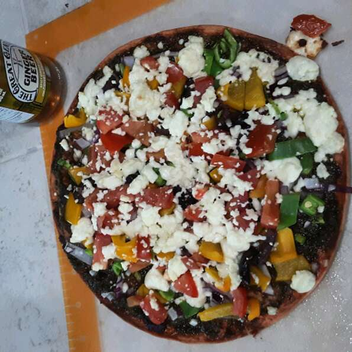

Pesto Pizza

Description
A great alternative to your regular pizza.
Ingredients
- 1 pre-baked pizza crust
- 1/2 cup pesto
- 1 ripe tomato, chopped
- 1/2 cup green bell pepper, chopped
- 1 can chopped black olives, drained
- 1/2 small red onion, chopped
- 1 can artichoke hearts, drained and sliced
- 1 cup crumbled feta cheese
Steps
- Preheat oven to 450 degrees F (230 degrees C).
-
Spread pesto on pizza crust. Top with tomatoes, bell peppers, olives,
red onions, artichoke hearts and feta cheese.
-
Bake for 8 to 10 minutes, or until cheese is melted and browned.